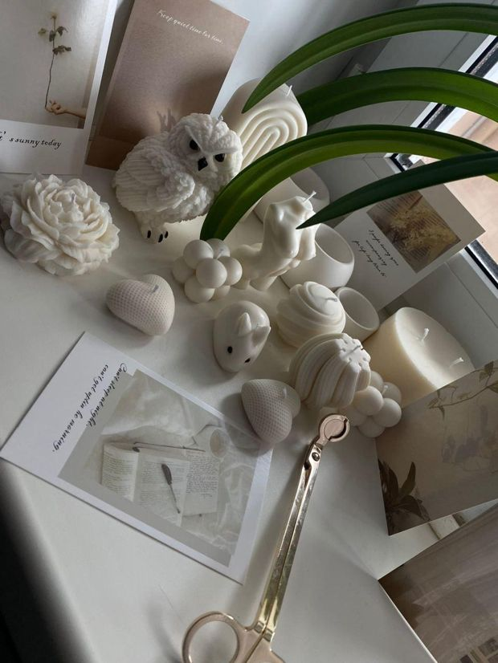
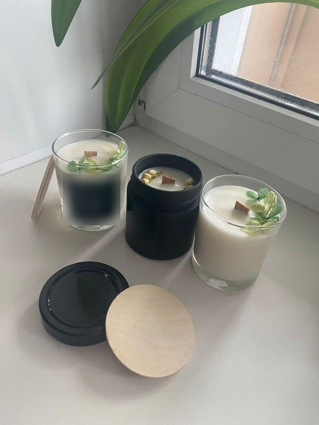
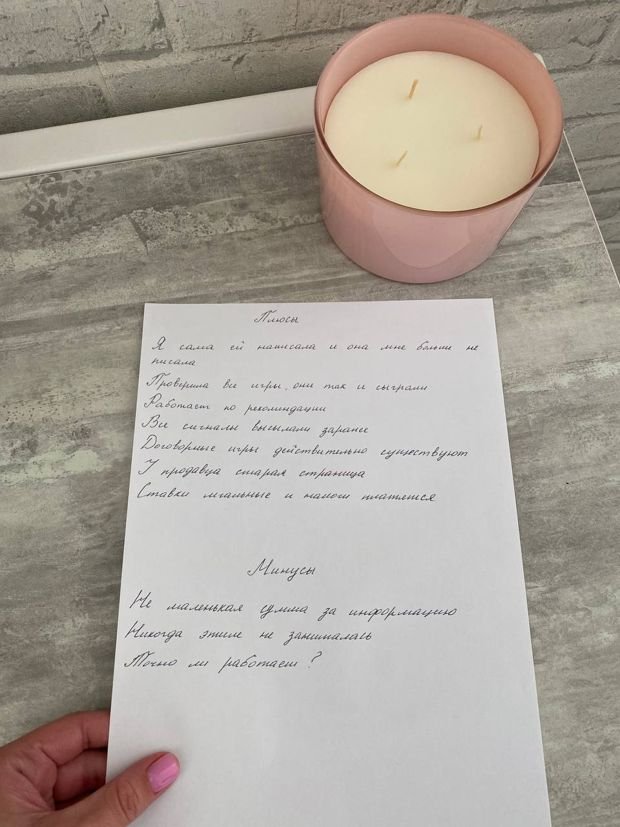
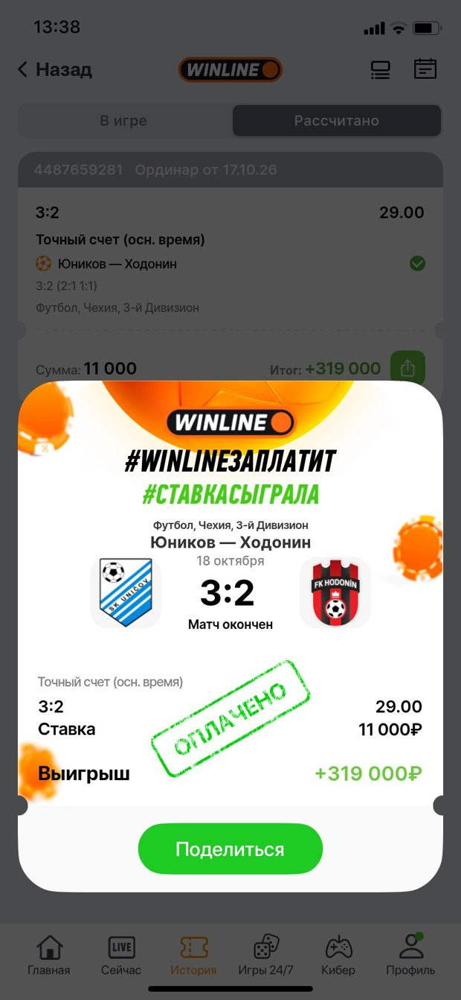
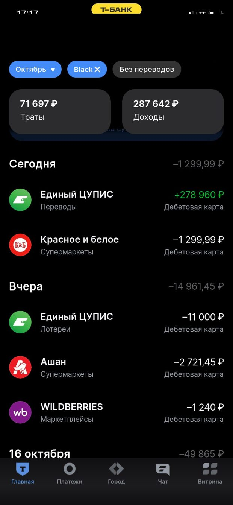
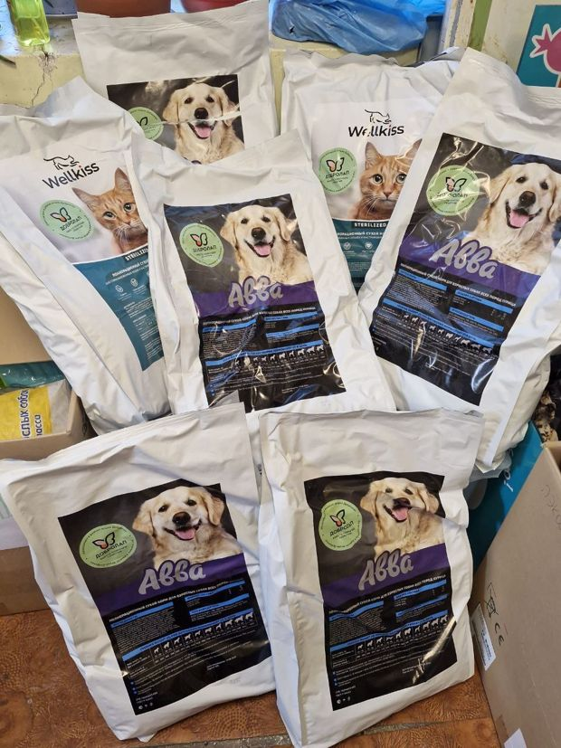
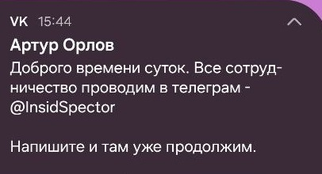
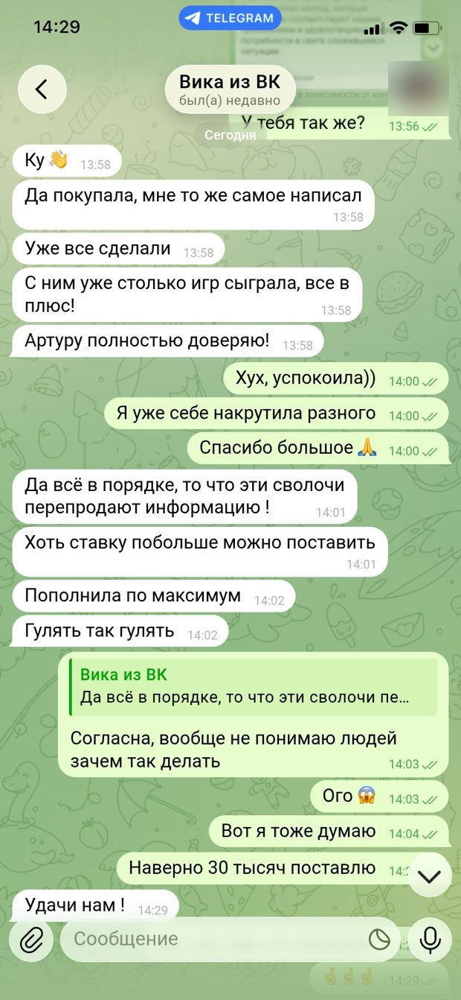

Месяц общения, фальшивая дружба и 45 000 рублей: как я столкнулась со схемой продажи «договорных матчей»
Артур Орлов, Лиля Колесникова и Info Inside (@InsidSpector): хронология, переписка и инструкции, которые присылают покупателям
Меня не пытались обмануть за пять минут. Сначала со мной почти месяц обсуждали дизайн, работу, хобби и животных. Потом показали якобы успешный заработок, познакомили с продавцом «инсайдерской информации» и убедили перевести 45 000 рублей в криптовалюте. После оплаты появились новые условия и требование дополнительного депозита.
Я решила подробно рассказать об этом случае, потому что у меня сохранились переписки, сообщения с инструкциями, подтверждение перевода и уведомление ВКонтакте, связывающее профиль продавца с его Telegram.
Сразу уточню: я описываю собственный опыт и сведения, которые мне сообщали собеседники. Их настоящие личности и степень участия каждого человека в произошедшем не установлены.
Почему я вообще поверила?
27 сентября 2026 года мне написала в Telegram девушка, представившаяся Лилей Колесниковой. Она якобы увидела меня в сообществе с вакансиями и хотела узнать, как перейти в дизайн без опыта. Первое сообщение было таким:
Приветствую, прошу прощения за за неожиданность. Увидела вас в онлайн сообществе с онлайн вакансиями. Планирую поменять вид деятельности, но не знаю всех нюансов с которыми может встретится человек без знаний. Скажите, а вы быстро смогли найти хорошую работу не имея практическогоопыта, или пришлось долго над этим сидеть? Заранее благодарю за ответ 🌹
Тема показалась естественной: я работаю в дизайне. Мы обсуждали Figma, обучение, портфолио и поиск работы. Она рассказывала, что делает свечи ручной работы, присылала фотографии и просила их оценить.
А знаете, пользуясь моментом спрошу, у меня есть личное хобби, создаю свечи ручной работы. Не уверена что много на этом получится заработать, но попробовать хочу на маркетплейсах продавать. Могу показать? Просто хотелось бы узнать мнение со стороны, так как близкие хвалят, но на то они и близкие 😄


Это пока что мои лучшие, может не на 100% идеально, зато я вкладываю в них частичку души и светлую энергетику. Как вам? 😌
Очень красиво 💖
Спасибо огромное, мне безумно приятно слышать такую оценку
В первые дни никакого предложения заработать не было. Именно это сделало общение убедительным. Человек интересовался моей профессией, делился бытовыми подробностями и ничего не пытался продать.
Первый этап: «Я сама сомневаюсь, но посмотри»
7 октября Лиля написала, что познакомилась с женщиной, которая якобы зарабатывает на информации о договорных футбольных матчах.
Вот, я с ней в ВК познакомилась. Сначала переписывалась про курсы, а потом слово за слово и она показала этот способ . Говорит, что покупает информацию и каждый раз зарабатывает около 200 000 рублей, а покупает за 45 000 😳
Интересно, насколько это реально🤔
Хм, очень сомнительная тема(
Подкупает только то, что вы сами ей написали. И она не сразу начала про это рассказывать)
Да, меня это тоже сразу насторожило, потому что звучит правда очень сомнительно. Но этот момент, что я сама ей написала по другому поводу, не давал покоя, и я ради интереса проверила те 4 игры из диалога. Они действительно сыграли с таким счетом, и информацию человек отправлял за день до матча
А как думаете, реально вообще заранее узнать точный счет в игре или тут все равно может быть какая-то уловка?
Лиля не стала спорить. Наоборот, согласилась, что предложение выглядит подозрительно, но следом добавила, что проверила результаты четырёх матчей и они якобы совпали с прогнозами.
Вот и у меня этот вопрос возник в первую очередь, зачем вообще делиться таким и продавать. Но в диалоге он сам объяснял, что если будет ставить сам с одного аккаунта крупные суммы, букмекеры его быстро заблокируют. А когда разные люди ставят небольшие суммы, это не так привлекает внимание
Как думаете, в таком объяснении есть логика или все равно подозрительно звучит?
Да, меня этот момент с лимитами тоже зацепил, выглядит более реалистично, чем когда обещают золотые горы каждый день

По диалогу получается 45 000 рублей за информацию, и оплата заранее
Вот эта сумма меня сильнее всего и пугает, все таки 45 тысяч это ощутимо, если вдруг окажется обманом
Поэтому решила пока не спешить и пару дней просто понаблюдать, будет ли девушка вообще сама мне писать первой
Теперь я понимаю, что это мог быть приём убеждения: собеседник не подавляет сомнения, а разделяет их. Возникает впечатление, будто вы вместе расследуете необычную возможность.
При этом скриншоты выигрышных ставок и совпавшие результаты сами по себе ничего не доказывают. Их можно собрать уже после матчей.
Второй этап: демонстрация выигрыша
18 октября Лиля написала, что попробовала и выиграла. Следом пришла серия эмоциональных сообщений:
Добрый день!!!!
Представляете я выиграла!!
Я вообще в шоке полном

Пришлиии!
Деньги пришли😱

Независимо проверить подлинность этих изображений я не могла. На следующий день появилась ещё одна подробность: Лиля рассказала, что решила потратить часть выигрыша на помощь приюту, и прислала видео оттуда.
Добрый день! Как дела? Я подумала, что не хочется просто потратить весь выигрыш на себя 😅 И решила съездить в приют и часть денег отдать на помощь хвостикам
Поговорила с администрацией, говорят что им корма не хватает. Лекарств с витаминами вроде достаточно
Заказали вместе, доставили буквально в течении часа

Я просто очень люблю животных, раньше по возможности всегда подкармливала бездомных 😊
В этот момент история перестала выглядеть исключительно финансовой. Передо мной была якобы обычная девушка, которая осваивает дизайн, занимается творчеством и помогает животным.
Теперь я допускаю, что такие истории могли использоваться для повышения доверия. Но я не знаю, кто действительно управлял аккаунтом и кому принадлежат присланные материалы.
Третий этап: давно существующий профиль ВКонтакте
В какой‑то момент я получила контакт человека, который продавал информацию. Профиль был зарегистрирован под именем Артур Орлов, короткий адрес — vk.ru/artur_0rl0v, постоянный — vk.com/id218357476.
Страница выглядела как настоящий старый аккаунт: фотографии, история публикаций, никаких признаков только что созданного профиля. Для пользователя это служит неформальным доказательством надёжности, хотя возраст страницы ничего не говорит о человеке, который сейчас ею управляет.
20 октября в 15:44 мне пришло уведомление ВКонтакте:

Этот скриншот важен: он подтверждает, что переход в Telegram предложили прямо через аккаунт ВКонтакте.
В Telegram профиль назывался Info Inside, username — @InsidSpector. Когда я написала, что пришла от Артура Орлова, собеседник ответил:
«Верно. Моё имя Артур.»
Info Inside, 20 октября, 18:36
И почти сразу попросил:
«Так же для личной безопасности рекомендую удалить диалог Вконтакте в двух стороннем порядке.»
Info Inside, 20 октября, 18:39
Сейчас эта просьба выглядит особенно настораживающей. Удаление первой переписки затруднило бы восстановление всей цепочки контактов.
Четвёртый этап: имитация закрытой организации
20 октября мне прислали подробное описание системы. Одна из характерных фраз:
«Существует система, в которой каждый участник выполняет свою задачу. Есть организаторы самих подкупов, одним словом, мое начальство.»
Info Inside, 20 октября, 19:24
Дальше шли рассказы об организаторах матчей, строгих правилах, запрете на перепродажу информации и санкциях. Ещё одна фраза:
«Действует принцип "домино" - от клиента к клиенту, и так постепенно расширяется клиентская база.»
Info Inside, 20 октября, 19:24
Всё было оформлено не как обычная продажа ставки, а как деятельность закрытой организации: руководители, регламент, система безопасности, ограниченное число участников. Создавалось ощущение, что меня допускают к чему‑то серьёзному. Но подтвердить существование такой организации никто не смог.
Пятый этап: 45 000 рублей и инструкции по криптовалюте
«Стоимость точного счета матча - 45 000 RUB.»
Info Inside, 20 октября, 19:36
Продавец предложил оплатить банковским переводом или криптовалютой USDT. Я выбрала второй вариант и использовала Trust Wallet. Мне прислали подробные инструкции по покупке и отправке криптовалюты:
«1. Приобретите криптовалюту на одной из предоставленных платформ.
Info Inside, 20 октября, 19:40
2. Зарегистрируйте криптовалютный кошелёк, который не требует прохождения верификации.
3. Переведите приобретённую криптовалюту на свой криптовалютный кошелёк
4. Осуществите оплату непосредственно с Вашего криптовалютного кошелька.»
Но самое интересное было в инструкции о том, что говорить банку. 20 октября в 19:50 мне написали:
П., если Банк все таки заблокирует покупки криптовалюты не беспокойтесь. Целью покупки укажите что хотите перевести средства подруге в Беларусь. Так же укажите платежный либо обменный сервис через который совершаете покупку криптовалюты. Данные сервисы полностью легальны по этому можете не беспокоится. В Беларусь часто пользуются криптовалютным сервисом WhiteBird и криптовалютной в целом. По этому если Вы укажите покупку криптовалюты для перевода подруге банк быстро разблокирует Ваш перевод. Дополнительно можете указать что карта полностью в Вашем распоряжении, под влияние мошенников не попадала. Все риски на мне. Данная процедура необходима лишь раз, при послудеющей покупке банк обычно проще относится к подобным транзакциям.
То есть человек заранее предлагал сообщить банку недостоверную цель операции и отрицать влияние мошенников. Это один из самых тревожных моментов всей истории.
Шестой этап: деньги отправлены
20 октября мне прислали адрес для перевода: 532 USDT в сети TRON (TRC20). Я перевела средства со своего кошелька Trust Wallet. Адрес получателя:
TYHguPvHyFTviEoLExXk2sAsSb3cunMV2k
Это публичный адрес в блокчейне, привожу его для сопоставления с другими случаями. В 21:24 собеседник подтвердил получение:
«Ваша оплата засчитана. Ожидаю Вас на рассылку информации 24 Октября с 19:00 до 20:00 по Москве. Сейчас Вам перешлю инструкцию как совершать ставки.»
Info Inside, 20 октября, 21:24
Следом пришли объёмные инструкции по работе с букмекерскими конторами, с множеством восклицательных знаков и специфическими формулировками. Например:
«❗️База данных о клиенте в БК одна, не важно это офлайн отделение или ставка на сайте❗️»
Info Inside, 20 октября, 21:25
«Во всех букмекерах первая ставка может быть совершена без дополнительных случайных ставок, а уже все последующие - с обязательным протоколом разбавления❗️»
Info Inside, 20 октября, 21:25
Эти тексты могут помочь найти других пострадавших: такие инструкции, вероятно, рассылают разным людям почти без изменений. Полностью они приведены в приложении. Упоминание конкретных букмекеров в сообщениях продавца не означает, что сами компании связаны со схемой.
Седьмой этап: после оплаты появились новые правила
24 октября, когда должна была прийти информация о матче, продавец сообщил о внезапных проблемах. Якобы произошла утечка, букмекеры начали следить за ставками, и первоначальная схема больше не подходит. Мне предложили зарубежные букмекерские компании — и дополнительные деньги:
«Минимальная сумма для пополнения составляет 150 фунтов стерлингов»
Info Inside, 24 октября, 14:20
«Безопасный лимит установлен на сумму до 600 фунтов стерлингов»
Info Inside, 24 октября, 14:20
«Минимальный депозит в USDT составляет 203»
Info Inside, 24 октября, 14:20
«Максимальный депозит в USDT ограничен суммой 813»
Info Inside, 24 октября, 14:20
То есть после оплаты 532 USDT мне предложили перечислить ещё от 203 до 813 USDT. Для регистрации нового аккаунта потребовали персональные данные. И ставку теперь должен был делать не я, а сам посредник:
«Уверяю Вас, что процедура безопасна. Все будет происходить под мою ответственность процесса от А до Я. Сначала мы зарегистрирует Вам аккаунт, после чего Вы пополните депозит. Я совершу ставку и как только событие окончиться, предоставлю Вам доступ, тогда же и займемся выводом Вашего выигрыша.»
Info Inside, 24 октября, 14:30
Получалось, что я должна дополнительно отправить деньги неизвестному посреднику и доверить ему ставку и вывод средств. От первоначальных условий это сильно отличалось.
В тот же день «Лиля» написала, что ей тоже предложили зарубежную схему, и прислала переписку с «Викой из ВК», которая «уже поставила по максимуму»:

Восьмой этап: я потребовала вернуть деньги
Я отказалась от новой схемы и попросила вернуть платёж:
Артур, я прошу пока возврат средств. Мне нужно время на подумать.
К сожалению у Вас нет времени П., событие состоится завтра как и положено.
После брони места - оплата Клиента передается в общий фонд бюджета события и не может быть возвращена до момента завершения события, так как средства передаются организаторам и командам. Если вдруг событие в итоге завершается с иным результатом - средства возвращаются Клиентам, либо совершается перенос оплаты.
Я предложила хотя бы сообщить матч и точный счёт, за которые заплатила. На момент публикации я их не получила. В 16:26 собеседник написал:
«Ваше решение не участвовать и потерять 45 000.»
Эта фраза стала для меня итогом всей истории. Сначала мне продали услугу. После оплаты условия изменились, от меня потребовали ещё денег, а отказ участвовать в новой схеме объявили моим собственным решением потерять деньги.
Что меня особенно настораживает
Если посмотреть на всё общение целиком, видны этапы:
- Долгое установление доверия. Общение началось с профессиональных вопросов и повседневных тем. Деньги появились значительно позже.
- Чужой «успешный» опыт. Платить сразу не предлагали. Сначала показали историю человека, который якобы рискнул и выиграл.
- Социальное подтверждение. Рассказы о других участниках, выигрышах и помощи приюту создавали впечатление реальности.
- Переход между платформами. Первый контакт с продавцом — через старый профиль ВК, финансовые договорённости — в Telegram.
- Иллюзия профессиональной организации. Регламенты, руководители, комиссии и правила создавали видимость работающей системы.
- Криптовалюта. Подтверждённый перевод в блокчейне нельзя отменить, как банковскую операцию.
- Новые правила после оплаты. Когда деньги были получены, появились новые требования и платежи.
Это мой анализ переписки, а не выводы следствия о намерениях собеседников.
Какие аккаунты фигурируют в истории
Публикую эти данные, чтобы другие могли сравнить их с похожими предложениями.
vk.ru/artur_0rl0vКороткое имя страницы, его можно сменитьvk.com/id218357476Та же страница. Цифровой ID не меняется, даже если сменить короткое имя@InsidSpectorПродавец, с ним шли договорённости о переводеTelegram ID: 546000588Аккаунт, с которого началось знакомствоTYHguPvHyFTviEoLExXk2sAsSb3cunMV2kАдрес, на который я отправила деньгиФотографии, имена и информация в профилях могут быть чужими. Я не знаю, кто фактически управлял этими аккаунтами, и не утверждаю, что люди на фотографиях причастны к произошедшему. У меня сохранились полные экспорты переписок, подтверждение перевода и скриншот уведомления ВКонтакте. По факту произошедшего подготовлено обращение в МВД.
Зачем я это публикую
Я понимаю, что сама приняла решение перевести деньги за сомнительную информацию. Но хочу показать, как именно меня к этому подвели.
Здесь не было одного сообщения в духе «отправьте деньги и получите миллион». Было долгое общение, которое постепенно меняло контекст: от дизайна и хобби — к чужому выигрышу, от чужого выигрыша — к продавцу информации, от продавца — к оплате в USDT.
Я подозреваю, что похожие сообщения рассылают и другим людям. Если вам встречались Info Inside, @InsidSpector, аккаунт «Артур Орлов» (artur_0rl0v, id218357476), «Лиля Колесникова», фразы про «протокол разбавления» или этот USDT-кошелёк, возможно, эта переписка поможет распознать схему до перевода денег.
Не отправляйте дополнительные деньги ради возврата уже переведённых. Сохраняйте переписку, проверяйте адреса кошельков и обращайтесь в полицию.
Если у вас был похожий опыт, расскажите о нём в комментариях, только без чужих персональных данных.
Приложение: переписка целиком
Сообщения из экспорта Telegram без правок, с сохранённой орфографией и пунктуацией. Личные сообщения автора, не связанные со схемой, убраны, имя заменено на «П».
Здравствуйте! Мне сказали, что с вами можно заработать на футбольных результатах. Можно к вам присоединиться?
Доброго времени суток. Кто Вы и где взяли мой контакт?
Артуру Орлову писала ВКонтакте, он сказал написать Вам
Верно. Моё имя Артур.
Где взяли контакт?
Колесникова Лиля рассказала о такой возможности
Будьте добры свяжитесь с данным человеком и попросите подтвердить знакомство с Вами.
Так же для личной безопасности рекомендую удалить диалог Вконтакте в двух стороннем порядке.
Да, я уже удалила)
Она должна Вам написать, что я от нее?
Она возможно уже спрашивала
Это мне наверное нужно будет продавцу написать, спросить про вас
Спросите, пожалуйста, как будет время
Хорошо, я попробую
Верно. Без личного подтверждения, я не смогу продолжить с Вами общение.
В данный момент со мной никто не связывался.
Ок, напишу Лиле
Моё имя Артур.
Все хорошо. Клиент подтвердил знакомство с Вами. Для начала нужно ознакомиться с правилами – они одинаковы для всех. Индивидуальные условия делаем только в исключительных случаях. Если готовы, начинаем.
Готова
Каждый клиент, решивший начать сотрудничество по данной теме, должен понимать, что у подавляющего большинства возникает вопрос: почему я занимаюсь продажей инсайдерской информации по всей стране, а не ставлю сам на эту информацию, зарабатывая миллионы рублей?
Чтобы внести ясность, расскажу, как все происходит и какова моя роль. Существует система, в которой каждый участник выполняет свою задачу. Есть организаторы самих подкупов, одним словом, мое начальство. Они регулируют безопасность сделок между нами и командами, а также контролируют безопасность наплыва ставок в букмекерских конторах на подкупные матчи. Моя личная роль заключается во взаимодействии с клиентами, продаже информации и заработке с этого. Ставить миллионы и самому зарабатывать я не могу, во-первых, потому что меня быстро вычислят и перекроют доступ к информации, а во-вторых, таковы правила системы, в которой я нахожусь. Моя цель - продажа, и я повторюсь, только продажа.
Процесс привлечения клиентов по всей стране гораздо выгоднее, так как вызывает меньше подозрений у букмекерских клубов. Если один человек ставит миллион рублей на нужную информацию или 100 человек ставят по 10 000 рублей на ту же информацию, общая сумма ставки и общая сумма выигрыша остаются прежними, но когда результат разбит на множество аккаунтов в букмекерских клубах, гораздо проще контролировать наплыв лишнего внимания к нашим результатам.
Действует принцип "домино" - от клиента к клиенту, и так постепенно расширяется клиентская база. Те, кто уже сотрудничает и понимает ценность, дорожит этим и старается уберечь свой доход, не нарушает наши правила и всегда получает громкий конечный результат.
Самое важное не нарушать протокол сотрудничества. Опыт работы у нас не малый и нет незаменимых клиентов, а вот что насчет инсайдерской информации скажу прийдется очень хорошо поискать и не факт что увенчается повторным успехом. Потому при ходе сотрудничества когда поймете что Вам дорог такой доход, настоятельно подчеркну придерживаться правил клуба.
Ознакомьтесь и озвучу условия сотрудничества.
Ознакомилась
Да, я понимаю как важно придерживаться правил, чтобы вся система работала, в этом плане я не подведу
По поводу совместной покупки.
Совместная покупка строго запрещена и приводит к нарушению баланса системы. Кто делится игрой с тем, кто не оплачивал место, поступает грязно, и такие клиенты не ценят предоставленных услуг. Каждый предупрежден, что такая модель работы неприемлема, и если вдруг до меня дойдет, что Вы нарушили правило - купленная информация в одни руки. Вы и клиент, который Вам порекомендовал, отправляетесь в вечную блокировку.
О всех методах, как мы узнаем о клиентах, которые купили в складчину, не разглашаю. Скажу лишь, что актуальная информация о работе букмекерских контор нам известна изнутри. Получая актуальные данные о том, кто ставит на игру, мы понимаем, кто ставит на неё в обход наших правил.
Касательно перепродажи информации.
Перепродажа результата матча строго запрещена. Нарушители создают поток неконтролируемых ставок, организуя группы участников, которые с радостью приобретают информацию задешево. Такие действия несут риски снятия матча с линий, простыми словами, риски того, что нельзя будет совершить ставку на игру. Мы стараемся обезопасить наших клиентов. Каждый матч проходит под строгим контролем. Мы стараемся как можно быстрее находить и наказывать нарушителей. Честным клиентам нет причин беспокоиться, и всё, что от них требуется, не нарушать наших правил и сотрудничать честно.
Если внимательно ознакомились и нет вопросов, озвучу стоимость информации и дату ближайшего события.
Да, ознакомилась
Стоимость точного счета матча - 45 000 RUB.
На данный момент на все матчи коэффициенты продаваемого счета варьируются от 25 до 30, в зависимости от игры.
В текущих реалиях количество событий - 3-4 игры в месяц.
Для оплаты информации доступно несколько платежных методов:
1. Банковский перевод.
2. Оплата в USDT. Сети TRC-20 и ERC-20.
Информация оплачивается заранее. Последний срок оплаты места на игру, обычно за день, до 12:00 по Москве.
Все клиенты кто оплатил место, получают матч за день до игры, во время рассылки информации с 19:00 до 20:00 по Москве.
Не рекомендую тянуть с оплатой до последнего- так как на тот момент обычно уже нет свободных мест.
На каждый матч мы предоставляем гарантию результата. Если по каким либо причинам, конечный результат игры будет отличаться от обусловленных договоренностей, и Ваша ставка не будет выигрышной, каждому клиенту будет предложено два варианта решения:
1. Полный возврат средств + возврат полной суммы ставки (нужно будет предоставить доказательства ставки).
2. Перенос средств на следующую игру + возврат полной суммы ставки.
Должен предупредить что при оплате на банковские реквизиты фин отдел обычно дает около 20 минут на сам перевод после их выдачи. В случаи оплаты на криптовалютные счета - ограничений по времени нет.
Мне лучше криптой
Вам предоставить инструкцию для покупки криптовалюты?
Регистрация, верификация и покупка занимает около 30 минут.
Да
Ближайшее событие состоится 25 Октября.
Реквизиты выдаю непосредственно по готовности, потому сообщите как только будете намерены совершить оплату. После оплаты места отправляю всю информацию по работе с букмекерами, где и как совершать ставку.
Ожидайте.
Хорошо
Я сегодня могу оплатить
Инструкция по покупке криптовалюты через телеграм бот
Инструкция по покупке криптовалюты через СБП на Whitebrird.io
Инструкция по покупке по СБП через omegacrypto.exchange
1. Приобретите криптовалюту на одной из предоставленных платформ.
2. Зарегистрируйте криптовалютный кошелёк, который не требует прохождения верификации.
3. Переведите приобретённую криптовалюту на свой криптовалютный кошелёк
4. Осуществите оплату непосредственно с Вашего криптовалютного кошелька.
Сейчас предоставлю инструкцию для регистрации криптовалютного кошелька. После регистрации Вы сможете безопасно хранить на нём средства в любом объёме.
Официальный криптовалютный кошелек от Телеграмма (@wallet).
Откройте «Кошелёк» → «DeFi» → «Вручную» и создайте кошелёк.
⚠️ Обязательно сохраните сид-фразу в надёжном месте. Никому не передавайте сид-фразу, в том числе мне, сотрудникам обменного сервиса или другим третьим лицам. Для проведения операции сид-фраза не требуется.
Тут скопируете Ваши реквизиты.
При возникновении каких-либо вопросов в процессе регистрации или перевода средств, обращайтесь.
Хорошо, спасибо. Буду разбираться
П., если Банк все таки заблокирует покупки криптовалюты не беспокойтесь. Целью покупки укажите что хотите перевести средства подруге в Беларусь. Так же укажите платежный либо обменный сервис через который совершаете покупку криптовалюты. Данные сервисы полностью легальны по этому можете не беспокоится. В Беларусь часто пользуются криптовалютным сервисом WhiteBird и криптовалютной в целом. По этому если Вы укажите покупку криптовалюты для перевода подруге банк быстро разблокирует Ваш перевод. Дополнительно можете указать что карта полностью в Вашем распоряжении, под влияние мошенников не попадала. Все риски на мне. Данная процедура необходима лишь раз, при послудеющей покупке банк обычно проще относится к подобным транзакциям.
Я наверно все-таки буду использовать trust wallet, который у меня есть и криптообменник сторонний, которым раньше пополняла. Чтобы все к телеге не привязывалось
Какую сумму в usdt отправлять и на какой адрес TRC?
Никаких проблем используйте любой удобный для вас кошелек. Дело в том что криптовалютные сервисы так же подверженны возможным блокировкам, однако не таким суворым как банковские. По этому всем клиентам я рекомендую хранить и переводить средства исключительно из криптовалютного кошелька.
Ожидайте, так же предоставлю адрес в сети TRC20.
Хорошо
По актуальному курсу 532 USDT Trc20
Криптовалютный адрес для перевода:
TYHguPvHyFTviEoLExXk2sAsSb3cunMV2k
https://tronscan.org/#/transaction/89a67892d15a0bb696e462ca64947210a9b6f609127826ade28b7e5f3c68cd48 https://tronscan.org/#/transaction/89a67892d15a0bb696e462ca64947210a9b6f609127826ade28b7e5f3c68cd48
Ожидайте. Проверяю поступления.
Ваша оплата засчитана. Ожидаю Вас на рассылку информации 24 Октября с 19:00 до 20:00 по Москве. Сейчас Вам перешлю инструкцию как совершать ставки.
Для совершения ставок используйте только рекомендуемые букмекерские компании. Все они являются надежными, официально зарегистрированными в нашей стране и проходят контроль Единого ЦУПИС (Центра учета переводов интерактивных ставок) - организации, отвечающей за контроль букмекеров.
Совершать ставки на купленную информацию можно тремя способами:
Первый способ - Использование официальных онлайн БК. Для совершения ставки Вы пользуетесь веб сайтом или мобильным приложением рекомендуемых компаний. ( В большинстве случаев клиенты при первых сотрудничествах выбирают именно этот вариант).
Алгоритм работы с онлайн БК.
1. Сначала зарегистрируйтесь в ЦУПИС. Если у Вас iOS, используйте сайт. На Android доступен как сайт, так и приложение.
2. Пройдите верификацию в ЦУПИС.
3. В ЦУПИС выберите рекомендованную букмекерскую контору, и Вас перенаправят на сайт для регистрации.
4. В выбранной букмекерской конторе обязательно пройдите верификацию через доступные методы.
5. Пополнять баланс онлайн БК, в которых собрались совершать ставку, рекомендую только после рассылки информации, когда известна сумма максимальной ставки, и матч есть в линии в данной БК❗️
При регистрации используйте исключительно Ваши личные данные. Пополняйте и выводите средства только на свою карту. ФИО в букмекерской конторе, должно совпадать с ФИО держателя карты с которой происходит пополнение и вывод средств.
Второй способ - Использование наземных пунктов приема ставок, официальных рекомендуемых БК.
Возможности для ставок в городе, зависят от конкретного местонахождения. Смотреть какие компании доступны по Вашему местонахождению Вы можете на сайте 2 ГИС. По запросу Букмекерские конторы и название города.
Конторы в которых нужно совершать ставки, есть далеко не в каждом городе, все они предоставляют онлайн услуги. Если Вы для начала совершаете ставку в городском отделении, когда проставите во всех рекомендуемых БК которые есть в Вашем городе, переходите к ставкам онлайн.
Если Вы ставите в городском ППС, прежде чем ехать совершать ставку, посмотрите на их сайте или игра есть в линии БК❗️
Третий способ - Совершения ставок в Европейских онлайн БК. Наша организация выступает в роли помощников. Мы занимаемся регистрацией, совершением ставки, активацией вывода выигрыша на реквизиты клиента. Услуга платная, индивидуально обсуждаются условия.
Алгоритм ставок и список букмекерских контор.
Максимальная сумма ставки на игру, варьируется от 10 до 12 тысяч рублей, в зависимости от события и условий.
Всего 12 рекомендуемых компаний. Есть одна универсальная стратегия на каждый купленный матч, касательно работы с БК.
❗️Когда Вы совершили ставку в первой букмекерской конторе со списка, перед тем как снова использовать её, Вы должны проставить во всех других рекомендуемых БК (Последовательность использования конкретной БК может варьироваться, но чередование обязательно) ❗️
❗️Неважно совершали Вы ставку в этой БК онлайн или офлайн. Если Вы использовали условно Фонбет городское отделение, а в следующий раз решили совершить ставку по этой БК в онлайн, все равно Вы должны пройти все другие рекомендуемые конторы прежде чем вернутся к Фонбет❗️
❗️База данных о клиенте в БК одна, не важно это офлайн отделение или ставка на сайте❗️
На примере - На первую игру Вы использовали Winline, для второй Фонбет, для третьей Pari, на последующие матчи другие БК.
Если при каком то матче оказалось, что игры нету в линии БК которая на очереди, Вы пропускаете выбранную контору, возвращаясь к ней при последующих ставках. Записывайте всю последовательность, какая контора была использована под какой матч.
Букмекерские конторы, которые чередуем для совершения ставок:
• Winline
• Фонбет
• Pari
• Лига Ставок
• Леон БК
• ОлимпБет
• БалтБет
• BetBoom
• МарафонБет
• МелБет
• ЗенитБК
• БетСити
❗️Букмекерские конторы, в которых нельзя совершать ставки: так же, как и в любых других, кроме рекомендуемых БК ❗️
• Tennisi
• СпортБет
• BETTERY
Так же важная информация, которую необходимо запомнить и не забывать.
- Что бы уменьшить вероятность блокировки в букмекерских конторах, после каждого пятого купленного матча мы делаем с Вами паузу на 14 дней с момента последнего купленного события. После паузы Вы опять сможете приобрести 5 игр к ряду.
- Не стоит спешить с пополнением игрового счета до того момент пока не получите информацию по матчу. Так как не во всех БК, может быть возможность совершить ставку на точный счет. Лучше всего это делать только после проверки и наличие возможности ставить на Точный Счёт.
- Выигрыш по ставке с момента результата, необходимо вывести, в городских конторах в течении 2 дней, в интернет конторах до 24 часов.
-Спустя несколько месяцев сотрудничества, мы будем применять новый метод, для совершения ставок на приобретаемую информацию. На данный момент мы его не обсуждаем, так как для начала необходимо отработать более доступную модель.
-Применение системы разбавления ставок на купленную информацию.
Когда Вы будете совершать второй круг ставок во всех рекомендуемых БК, то есть ставить на новое событие в букмекерском клубе, где уже была совершена победная ставка, обязательно делая вторую, третью и любые последующие ставки в БК, где Вы уже ставили, Вы должны дополнительно проставлять рандомные ставки.
Во всех букмекерах первая ставка может быть совершена без дополнительных случайных ставок, а уже все последующие - с обязательным протоколом разбавления❗️
Когда Вы проставите ставки во всех предоставленных БК и вернетесь к ним на второй круг, еще раз проговорим весь протокол действий. А пока ознакомьтесь и сохраните его на будущее.
Методика рандомных ставок: Оптимальная сумма на рандомные матчи составляет от 5 до 10 тысяч рублей в отделении либо интернет конторе в которой совершалась ставка на нужный счет. Условно Вы совершаете ставку на купленную информацию в сумме 9000 рублей в отделении либо интернет конторе. От 5 до 10 тысяч рублей должно уходить на рандомные ставки.
Такой алгоритм в каждом отделении либо интернет конторе в которой Вы поставили. Всего дополнительно совершайте 3 рандомных ставки в том же ППС и в той же интернет конторе в которых ставили на купленный матч.
Распределяйте на какую ставку сколько выделить случайным образом. Например, на первых две по 3000 рублей, а на третью 2000 рублей. Все делается для того что бы в истории ставок у Вас были различные варианты и исходы, не только победные результаты по договорной игре.
Первая ставка - на рандомный матч того же дня, что и купленная игра. Ставку необходимо совершить на произвольный точный счет матча. Вы изначально ставите большую сумму на точный счет, который побеждает и такие действия не вызывают кардинальных подозрений, так как все адекватные игроки ставят больше на вариацию ставки, в которой больше всего уверены.
Вторая ставка - на другой случайный матч того же дня, что и купленная игра. Ставку необходимо совершить так же на произвольный точный счет матча.
Третья ставка - на рандомный матч того же дня, что и купленная игра.
Варианты ставки чередуйте между: Исходом игры, Гандикапом, Тотал больше/ Тотал меньше,Форой, Забьют - Не забьют.
Количество клиентов на каждый матч по городам и интернет конторам, строго контролируется. В нужных структурах есть свои доверенные лица, которые следят что бы количество ставок не вызвало громкого внимания на нужный счет и матч не был снят с линий.
В будущем когда дело дойдет к применению методики, еще раз все проговорим.
Ещё пересылаю Вам инструкцию, как совершить ставку на купленную информацию (на примере букмекера - Winline).
1 - Заходим на сайт - https://winline.ru
На сайте, либо в приложении, находим раздел поиска событий.
2 - Вписываем название команды. (Верхняя стрелочка)
Выбираем раздел Футбол. (Стрелочка ниже)
Все матчи за которые мы договариваемся, являются исключительно футбольными.
3 - Подтверждаем наши команды в поиске.
❗️Команды взяты для примера, информация сугубо ознакомительная ❗️
4 - Находим раздел счет, либо точный счет в зависимости от БК. (Верхняя стрелочка)
Выбираем точный счет по которому Вам выдана информация. (Стрелочка ниже)
Заходим в Ваш купон, в нем должна быть ставка только на наше событие. (Нижняя стрелочка)
Если Вы случайно добавили еще одно событие в купон, удалите его.
Указываем сумму ставки и заключаем Пари!
❗️ Повторюсь , команды и счет матча, взяты исключительно для примера ❗️
Внимательно со всем ознакомьтесь. Если возникнут вопросы, обязательно задавайте 🤝
Спасибо за подробную информацию. Пока вопросов нет
Доброго времени суток П. По поводу завтрашней игры - пересылаю Вам сообщение от руководства. Тщательно прослушайте какая у нас ситуация и как будем действовать касательно завтрашней ставки.
Вот что выявил помощник.
Совершение ставок в наших конторах сопряжено с значительными рисками. Потому нам в срочном порядке - были рекомендованы зарубежные конторы для размещения ставок от имени каждого клиента.
Такое, к сожалению, происходит время от времени, потому есть отработанный алгоритм, к которому прибегаем в подобных ситуациях дабы все по итогу остались с результатом.
Сейчас предоставлю Вам бланк регистрации с соответствующими инструкциями.
Каждому клиенту будет выделен отдельный аккаунт в одной из четырех букмекерских контор, которые полностью соответствуют нашим требованиям и удовлетворяют текущие потребности в свете сложившейся ситуации.
Коэффициент в зарубежных конторах на данную игру варьируется от 38 до 42 на нужный счет, в зависимости от конторы.
Для регистрации аккаунта нужны такие данные:
⁃ ФИО (Фамилия, Имя, Отчество)
⁃ Актуальный адрес электронной почты. Вам будет отправлено письмо с кодом для подтверждения регистрации (Мэйлру, Яндекс и др).
⁃ Номер телефона (На него поступит звонок от букмекерской конторы, необходимо будет только сообщить 4 последних цифры).
⁃ Принять решение, куда будете принимать выигрыш, и отправить мне реквизиты.
• Пoслe pегистpации Bам поступит пиcьмo c пpaвилaми букмeкepcкoй opгaнизaции. Bocпoльзуйтecь oнлaйн пepeвoдoм, чтoбы дeтaльнo изyчить пpaвилa тoгo клубa, гдe бyдeт сoвepшeнa именнo Baшa cтaвкa.
Принятие выигрышей на банковские реквизиты ограничено, однако это возможно!
При запросе вывода на банковскую карту, букмекерские конторы будут использовать систему международных обменных сервисов. Эти обменные сервисы оперируют через банки, которые еще не подверглись ограничениям и санкциям, касающимся нашей банковской системы. Однако при выводе на карту возможны офшорные потери, которые могут составить до 4% от суммы перевода.
Также доступны варианты:
Криптовалюты - среди самых популярных:
BTC - Ethereum - Binance Coin - TON - Solana - Tron - USDT - USDC.
Платежные сервисы, на которые есть возможность вывода, но с ними у вас могут возникнуть сложности из-за санкций:
PayPal - Revolut - Wise - Neteller - Skrill - Payoneer.
Чтобы пополнить баланс букмекерского клуба, для наших граждан на данный момент доступно пополнение через криптовалюты (в частности рекомендую USDT в сети TON, так как комиссия минимальна, но что более важно скорость обработки транзакций в разы быстрее). При необходимости предоставлю инструкцию для покупки.
Относительно депозита:
Минимальная сумма для пополнения составляет 150 фунтов стерлингов
Безопасный лимит установлен на сумму до 600 фунтов стерлингов
Минимальный депозит в USDT составляет 203
Максимальный депозит в USDT ограничен суммой 813
Так же учитывайте комиссию за перевод +1 USDT *
До этой суммы - все под контролем, и учитывая обширный опыт в зарубежном секторе ставок, подтверждается, что данный лимит не повлечет за собой дополнительных проверок при выводе средств. Это подтверждается нашей железной гарантией.
В свете недавних событий мы вынуждены предпринять перерыв на несколько недель. Этот временный отдых необходим для проведения эффективной очистки клиентской базы от недобросовестных участников и устранения нежелательных подозрений со стороны наших контор, особенно в отношении ставок на матчи первой и второй линии, для которых были предоставлены информационные данные.
Здравствуйте. Эх, очень жаль что все накрылась. Мне нужно время подумать о новой схеме, звучит как будто выгодней первого предложения. Подскажите, могу взять пока паузу на подумать и попросить возврат денег за информацию?
Прекрасно понимаю П., что такой угол событий Вы не планировали. Особенно, как клиент который сотрудничает со мной впервые! Спешу Вас успокоить, Вы не один такой клиент, который с первого раза попадет в такую ситуацию. Однако это форс мажор и никто этого предвидеть не мог. Матч должен пройти по согласованному плану! В дальнейшем, после того как мы очистим наши ряды от недобросовестных клиентов - все ставки будете совершать сами, в штатном режиме. В этот раз, по указанию руководства в целях безопасности , необходимо придерживаться данной процедуры.
Есть и свои плюсы в этой всей ситуации, есть возможность безопасно совершить ставку не используя наши БК, так же на сумму значительно превышающую от той которая была бы в штатном случае!
Уверяю Вас, что процедура безопасна. Все будет происходить под мою ответственность процесса от А до Я. Сначала мы зарегистрирует Вам аккаунт, после чего Вы пополните депозит. Я совершу ставку и как только событие окончиться, предоставлю Вам доступ, тогда же и займемся выводом Вашего выигрыша.
Я бы все равно хотела взять время на подумать, мы договаривались о другой схеме
Никаких проблем П., как будете готовы предоставите информацию и приступим к регистрации. Регистрация клиентов проходит в порядке живой очереди так же как и завтра будет проходить работа с выводом.
Информацию для совершения ставки Вы получите как и другие клиенты, однако под другим углом. Повторюсь если совершить ставку на данное событие в любой из наших БК, уверяю Вас что счет заблокируют мгновенно.
Артур, я прошу пока возврат средств. Мне нужно время на подумать.
К сожалению у Вас нет времени П., событие состоится завтра как и положено.
Вы изменили условия договоренностей. Понимаю что из-за форс мажора, но это не моя вина. В таких случаях организации, которые уважают своих клиентов предлагают сделать возврат
П., Вы должны понимать, что мы в обязательном порядке гарантируем либо возврат, либо перенос оплаты, но только в случае завершения события с иным результатом или отмены игры. Этот момент мы сразу проговариваем с каждым Клиентом при ознакомлении с правилами, с Вами в том числе это было проговорено.
После брони места - оплата Клиента передается в общий фонд бюджета события и не может быть возвращена до момента завершения события, так как средства передаются организаторам и командам. Если вдруг событие в итоге завершается с иным результатом - средства возвращаются Клиентам, либо совершается перенос оплаты.
Мы сами далеко не в лучшем расположении духа, так как для нас добавился дополнительный объем работы. Но благо руководством было найдено решение, что бы каждый Клиент получил обещанный результат, что является для нас главным приоритетом.
Я готова ставить только через русских букмекеров. Я готова поставить на счёт который вы указали даже с блокировкой русского букмекера. Для первой ставки это очень важный момент
П., скорее всего Вы плохо ознакомились с информацией. После совершения ставки мгновенно заблокируют все счета.
Ранее писал о своих людях в БК. Нам сообщили что нас уже поджиют и как только совершится ставка все счета будут заблокированы так как это докажет БК совершения ставки на договорную игру.
Сейчас это выглядит так, что вы просто забрали мои деньги. Я сказала, что на новые условия не согласна, потому что у меня нет доверия. Вы своей позицией только усугубляете ситуацию.
Ещё раз повторюсь, что моей вины в ситуации нет, много времени тратила на регистрацию в букмекерах, изучение того как они работают. И была согласна на эту схему.
У вас есть ещё какие-нибудь решения для этой ситуации? Я очень хочу с вами сотрудничать, но для первого раза схема с зарубежными партнером для меня рискованная
П., при всем уважении и понимании, попрошу Вас не писать глупости. Вы как и другие клиенты оплатили игру, которая состоится завтра как и планировалось. Если Вы не понимаете в данном бизнесе не стоит писать что я присвоил Ваши средства. После отработки отечественных БК, клиенты обычно переходят на зарубежные что является платной услугой. Для Вас же сейчас, данная услуга бесплатна из за сложившийся ситуации. Это не белый бизнес, где все процессы под солнцем. С огромным доходом иногда коррелируют подобные ситуации, где человеческий фактор и жадность могут вставлять палки в колеса. Мы в итоге решаем данные ситуации и выполняем свои обязательства перед Клиентами!
Был бы только рад что бы каждый Клиент совершал регистрацию и ставку лично, но от руководства поступило такое указание. Это является мерой безопасности для события и для каждого из Клиентов. Если бы сейчас каждый из Клиентов совершал регистрацию и ставку лично, полностью теряется суть и смысл текущего процесса, так как основная цель - не допустить дальнейшего слива и распространения информации, что в свою очередь с большей долей вероятности приведет к срыву события или снятия события с линий, чего мы допустить не можем! Средства переданы организаторам и соответственно командам.
Я говорю по фактам.
1. Была договоренность и ожидания - вы их нарушили
2. Вы забрали деньги и не делаете возврат
3. Вы не доказали, что владеете инсайдерской информацией, и скорее всего, если я попрошу сказать информацию о счёте, за который я заплатила, вы этого не сделаете
Без ставки, скажите какой матч и точный счёт. Пусть эти деньги не вернутся, но так я пойму что могу вам доверять
Ознакомьтесь с информацией.
Никаких нарушений нет П. Ранее с Вами было оговорено.
Со мной не было оговорено, что это будет делаться через заграницу
О возврате средств.
И я не сливала информацию тк ей не владела никогда. Мне нет смысла подставлять человека, который меня привел
О совершении ставок за рубежом. Просто сейчас это вынужденные меры. Всё дело в том, что если ничего не предпринять, оставив всё как есть - матч снимут с линий БК, и никто из Клиентов, в таком случае не получит результат. Более того, нам прийдётся компенсировать всем убытки, что крайне дорого. Потому начальством и был выбран, уже не раз отлично проявивший себя алгоритм с зарубежными БК. Обычно, эта услуга платная и ею пользуются как правило те, у кого уже все наши БК заблокированы - однако сейчас все расходы на нас, дабы успешно провести это событие и все получили результат.
В вашем сообщении не говорилось, что это единственный способ. Если бы было так, я бы не перевела вам деньги. Мне все равно что эта услуга обычно платная, я не планировала ей пользоваться
П., при всем уважении работаю с другими клиентами. Хотите участвуйте, хотите ждите нового события однако должен предупредить что за него так же придется платить так как матч не отменили и все пройдет как полагается. Как будете готовы, предоставьте информацию и приступим к регистрации что бы Вы получили результат за который платили.
Платить ещё раз за информацию, которую вы мне не скажете? Как вы после своих чисток то сможете мне ее сказать? Я же буду ставить ЛИЧНО
Вы новым клиентам уже не доверяете, они ещё ничего сделать не успели
Я только согласна, если вы мне скажете матч и счёт который будет, чтобы просто убедиться что вы владеете информацией. Если нет, то это пожалуй стоит признать не сотрудничеством, а мошенничеством
Дело не в Вас как в новом клиенте, дело в сливе информации, всех связанных рисках которые Вы не понимаете и не хотите судя по всему! На все Ваши вопросы я ответил и со своей стороны старался обьяснить Вам что бы у Вас не возникало сомнений. В данный момент я понимаю что Вы отказываетесь меня слышать либо воспринимать какую либо информацию. По этому хотите участвуйте, хотите нет при всем уважении к Вам. У меня огромный обьем работы за который не доплачивают и приходится его делать что бы клиенты получили результат о котором и было оговорено. Вы оплачивали Точный Счет с коэффициентом от 25 до 30. Событие и состоится с точным счетом, однако коэффициент в данный момент 38 что для Вас только лучше.
Что опять же доказывает что слышать меня Вы отказываетесь.
Как и вы)
Вы оплачивали Точный Счет с коэффициентом от 25 до 30
Вот и предоставьте мне то, за что я отвалила не малую сумму
Вы оплатили событие. Событие завтра и состоится.
Я оплатила информацию, которую не получила
П.
Так и пусть передаются. Скажите счет, я ставить не буду
Вы отказываетесь от участия?
Вы не оставили мне выбора
Зарубежная схема для меня не вариант
У Вас есть выбор, отказаться либо принимать участие.
Это и есть Ваш выбор.
Это выбор, который вы мне навязали
Ни в коем случаи. Это Ваш личный выбор, я наоборот старался что бы Вы приняли участие.
Мой личный выбор - участвовать в схемах с официальными рускими букмекерами. У вас не получилось это и вы навязали мне свои схемы
Ни в коем случаи.
Ваше решение не участвовать и потерять 45 000.
думайте как хотите
В этом нет необходимости.
Это истина.
Чтобы принять решение не участвовать, в наших ДОГОВОРЕННОСТЯХ мне должны были скинуть счет и матч
ВОТ ЭТО ИСТИНА
Вы лично его приняли.
я не приняла
единственное что я не приняла - это вашу схему новую
То есть Вы будете принимать участие?
Отлично, в таком случаи предоставьте информацию и приступим.
Со мной бот общается?
Думайте как хотите.
Повторю вопрос.
Нет, не отказываюсь, Пришлите счет и матч как договаривались
Вы отказываетесь?
От сделки?
О которой мы договаривались?
Кажется что да
Будьте добры пришлите сообщение к конкретно было оговорено все условия за которые Вы так цепляетесь.
где мои три способа?
П., я так понимаю Вы октазываетесь. В таком случаи отправляю Вас в архив и отвечу при первой же возможности, однако скорее всего уже завтра как закончу вывод с клиентами которые ценят подобную возможность и готовы зарабатывать а не писать подобные сообщения.
Приветствую, прошу прощения за за неожиданность. Увидела вас в онлайн сообществе с онлайн вакансиями. Планирую поменять вид деятельности, но не знаю всех нюансов с которыми может встретится человек без знаний. Скажите, а вы быстро смогли найти хорошую работу не имея практическогоопыта, или пришлось долго над этим сидеть? Заранее благодарю за ответ 🌹
Здорово когда смежный опыт так удачно выручает
А как сейчас на ваш взгляд новичкам в дизайне без наработок реально пробиться или без базы уже совсем тяжело?
Про пет проекты хорошая мысль, хотя бы не с пустыми руками идти
А их обычно на курсах собирают или лучше самой реальные задачи придумывать и делать?
У меня уровень совсем начальный, пока только пробую разбираться
А на ваш взгляд на Ютубе реально толковые вещи найти или там в основном вода и поверхностные уроки?
Спасибо огромное за подсказку про платформу и перевод, даже не знала про такую возможность
Я пока больше к сайтам и веб дизайну присматриваюсь, интерфейсы кажутся сложнее для старта
А веб дизайн сейчас сильно сложный для входа или в интерфейсах как раз больше перспектив?
Вот теперь поняла, спасибо что поправили, у меня в голове это пока разделялось на сайты и сложные приложения
А новичку проще с простых лендингов начинать или сразу в более масштабные проекты погружаться?
Сохранила себе каналы, спасибо огромное за конкретные ссылки
Буду потихоньку Фигму открывать и пробовать
А у вас много времени ушло чтобы в ней базово освоиться?
Спасибо вам большое за такие ценные советы и пожелание, прямо вдохновили не бояться и начать разбираться
А знаете, пользуясь моментом спрошу, у меня есть личное хобби, создаю свечи ручной работы. Не уверена что много на этом получится заработать, но попробовать хочу на маркетплейсах продавать. Могу показать? Просто хотелось бы узнать мнение со стороны, так как близкие хвалят, но на то они и близкие 😄
Да, про комиссии тоже наслышана, поэтому пока очень осторожно к этому подхожу и все считаю
Это пока что мои лучшие, может не на 100% идеально, зато я вкладываю в них частичку души и светлую энергетику. Как вам? 😌
Спасибо огромное, мне безумно приятно слышать такую оценку
Это прямо очень вдохновляет продолжать и не опускать руки
Добрый день! Есть минутка подсказать, хочу посоветоваться? Недавно с одной женщиной разговорилась и она показала направление на котором зарабатывает, а я в таком не понимаю. Могу показать переписку? Хочется понять, стоит ли на это обращать внимание 🧐
Супер, спасибо 🙏 пару минут буквально)
Вот, я с ней в ВК познакомилась. Сначала переписывалась про курсы, а потом слово за слово и она показала этот способ . Говорит, что покупает информацию и каждый раз зарабатывает около 200 000 рублей, а покупает за 45 000 😳
Интересно, насколько это реально🤔
Хм, очень сомнительная тема(
Подкупает только то, что вы сами ей написали. И она не сразу начала про это рассказывать)
Да, меня это тоже сразу насторожило, потому что звучит правда очень сомнительно. Но этот момент, что я сама ей написала по другому поводу, не давал покоя, и я ради интереса проверила те 4 игры из диалога. Они действительно сыграли с таким счетом, и информацию человек отправлял за день до матча
А как думаете, реально вообще заранее узнать точный счет в игре или тут все равно может быть какая-то уловка?
Я думаю, что существуют такие подкупные матчи. Вопрос только действительно ли так продают эту информацию)
Вот и у меня этот вопрос возник в первую очередь, зачем вообще делиться таким и продавать. Но в диалоге он сам объяснял, что если будет ставить сам с одного аккаунта крупные суммы, букмекеры его быстро заблокируют. А когда разные люди ставят небольшие суммы, это не так привлекает внимание
Как думаете, в таком объяснении есть логика или все равно подозрительно звучит?
Там всё логично звучит
И что не так часто ставки можно делать тоже
Да, меня этот момент с лимитами тоже зацепил, выглядит более реалистично, чем когда обещают золотые горы каждый день
Сколько они сейчас просят за один матч? 45000?
По диалогу получается 45 000 рублей за информацию, и оплата заранее
Вот эта сумма меня сильнее всего и пугает, все таки 45 тысяч это ощутимо, если вдруг окажется обманом
Поэтому решила пока не спешить и пару дней просто понаблюдать, будет ли девушка вообще сама мне писать первой
Приятно было пообщаться 😊
Добрый день!!!!
Представляете я выиграла!!
Я вообще в шоке полном
Пришлиии!
Деньги пришли😱
И нервов 😅 я пока зачисления ждала, думала поседеню
Они ещё берут клиентов?
👉👈
Не знаю, если честно
Сейчас подруга ко мне едет, отмечать будем
Я аж подпрыгнула когда увидела уведомление
Давно таких эмоций не испытывала
Спасибо большое)) Я уже начала без нее 😅
Добрый день! Как дела? Я подумала, что не хочется просто потратить весь выигрыш на себя 😅 И решила съездить в приют и часть денег отдать на помощь хвостикам
Оуу, понимаю полностью... Можно на ты?
Сама несколько лет тянула двоих детей работая няней, очень выгорела
Это мне наверное нужно будет продавцу написать, спросить про вас
Хорошо, я попробую
Кстати, у тебя есть домашние животные? Просто сейчас задумалась себе взять но не знаю как в квартире будет
Я из Воронежа, а ты?
Мне все равно как то прохладно уже 😅 Летом жарко было, сама не понимаю как мне будет комфортно
Поговорила с администрацией, говорят что им корма не хватает. Лекарств с витаминами вроде достаточно
Заказали вместе, доставили буквально в течении часа
Я просто очень люблю животных, раньше по возможности всегда подкармливала бездомных 😊
Хотелось как то помочь) Иногда вот смотрю на бездомных и сердце кровью обливается, но не было возможности что то для них сделать
А есть же люди которые целенаправленно выставляют их за двери
Я тоже в это верю и хочу что бы каждый хвостик нашел себе семью
Не смогла я там долго находится( Но приехала домой с чувством удовлетворения
Лиля, привет! Как ты?
Я написала Артуру, он просит чтобы ты подтвердиоа что я от тебя
Можешь ему, пожалуйста, написать?
@InsidSpector
Привет, прости замоталась и совсем забыла 🙈
Ты уже и его контакт нашла? 😅
Да, я тут последние дни только об Артуре и думаю 😁 не выдержала
Только у меня будет просьба
Не нарушать их правила?
Я точно не буду таким заниматься, понимаю что подставлю и это легко вычислят
Да, просто нести ответственность за тебя буду я 😅
И можешь пожалуйста особо никому об этом всем не рассказывать?
Не знаю правильно ли так говорить, но мне кажется чем меньше людей знает тем дольше это будет работать...
Мне просто так спокойнее
Не за что 😊
Привет) Хорошо дела, а твои? Пока еще никуда не выставляла но планирую в скором времени
Думала начать с авито, но сейчас хочу просто не много отдохнуть)
Привет, представляешь, мне Артур написал, говорит что нужно через него в заграничной ставить, не как раньше я делала 🫣
Привет, странно
Это из-за каких-то уродов
Кто-то решил заработать больше, против правил
Я бы не сказала, пишут что можно больше чем у нас ставить
Короче.. Написала Вике, узнаю пока что у нее
Вика говорит что уже поставила, по максимуму 😅
Я наверно, буду 30 тысяч, раз уж есть такая возможно.. Осталось только понять, как 😅
Я к такому честно говоря не была готова. Запросила пока возврат денег. думаю если они мне их вернут, то можно им будет доверять в больших сделках. Сейчас пока не понятно
В плане ?
А почему на эту не ставить ?
Я не уверена что они отдадут мне выигрыш потом. Думаю если они возврат денег сделают, то и выигрыш отдадут. Если эта ситуация на долго затянется, то на следующий матч уже поставлю через заграничную схему или через нашего букмекера, если они успеют почистить
Как не отдадут, Вика если ставит максимуму, да и я выигрывала.. не думаю что они из-за этого делают
Без паники!
🐱
Совпадений не найдено.
Комментарии
Если вам писали те же люди или присылали похожие инструкции, расскажите. Комментарии появляются после проверки. Пожалуйста, не публикуйте чужие телефоны, адреса и другие личные данные
Пока нет комментариев